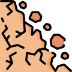

What to do in
case of a landslide!

What is Landslide?
(Ano ang Landslide?)

How to prepare for landslides?
(Paano maghanda laban sa pagguho ng lupa?)


(Ano ang Landslide?)
(Paano maghanda laban sa pagguho ng lupa?)